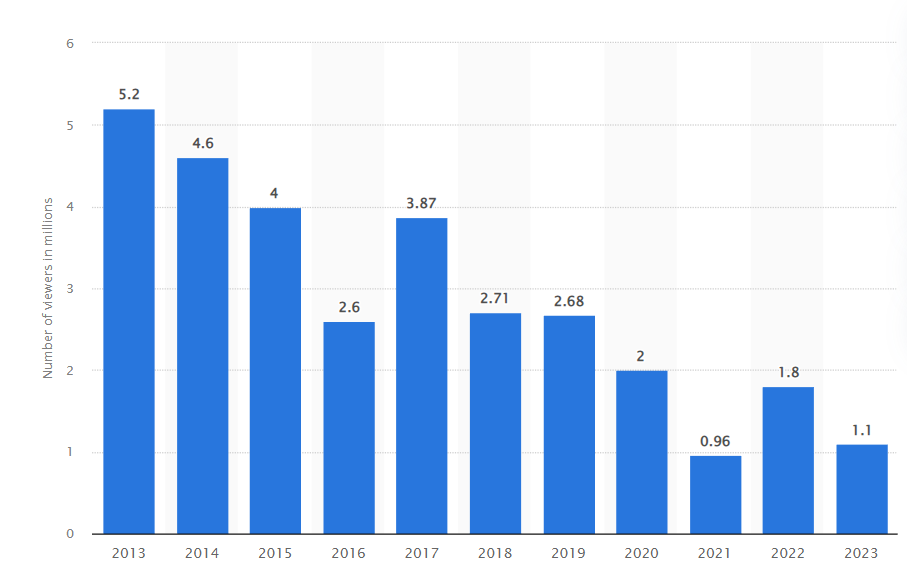

Screen Actors Guild Awards (also known as SAG Awards) are accolades given by the Screen Actors Guild-American Federation of Television and Radio Artists (SAG-AFTRA). The award was founded in 1995 to recognize outstanding performances in movie and prime time television. SAG Awards have been one of the major awards events in the Hollywood film industry since then, along with the Golden Globes and the Oscars. SAG awards focus both on individual performances and on the work of the entire ensemble of a drama series and comedy series, and the cast of a motion picture.
Number of the SAG Awards viewers from 2013 to 2023(in millions)
Actors With the Most SAG Awards
Screen Actors Guild Awards (SAG Awards) won:
Screen Actors Guild Awards (SAG Awards) won:
Screen Actors Guild Awards (SAG Awards) won: